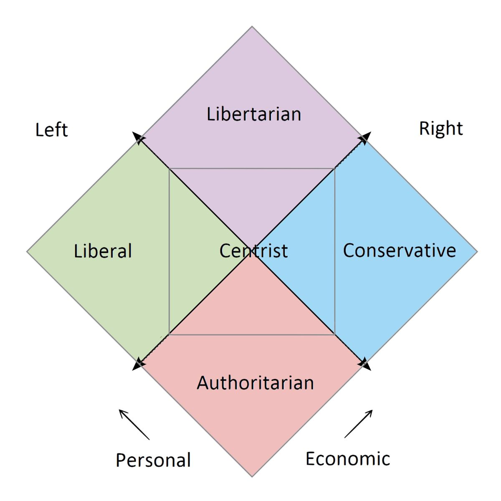
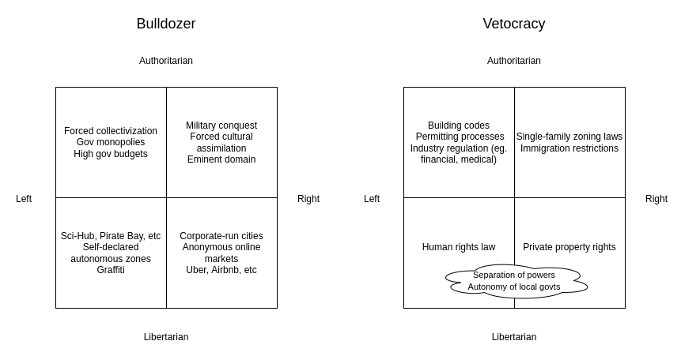
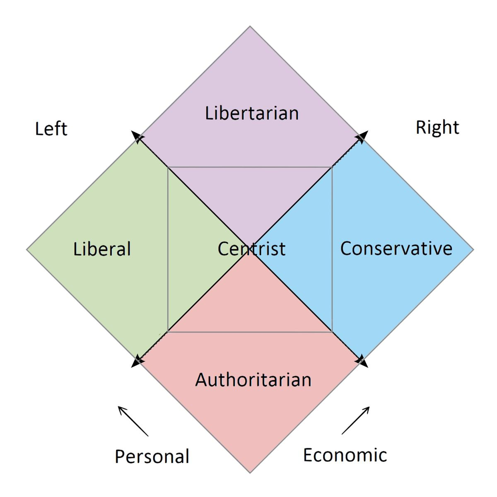
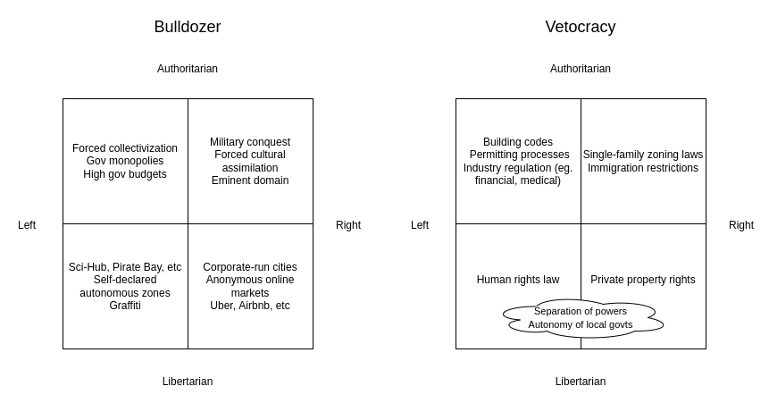

The bulldozer vs vetocracy political axis
2021 Dec 19
See all posts
The bulldozer vs vetocracy political axis
Typically, attempts to collapse down political preferences into a few
dimensions focus on two primary dimensions: "authoritarian vs
libertarian" and "left vs right". You've probably seen political
compasses like this:
|

|

|
There have been many variations on this, and even an entire subreddit
dedicated to memes based on these charts. I even made a spin on the
concept myself, with this
"meta-political compass" where at each point on the compass there is
a smaller compass depicting what the people at that point on the compass
see the axes of the compass as being.
Of course, "authoritarian vs libertarian" and "left vs right" are
both incredibly un-nuanced gross oversimplifications. But us
puny-brained human beings do not have the capacity to run anything close
to accurate simulations of humanity inside our heads, and so sometimes
incredibly un-nuanced gross oversimplifications are something we
need to understand the world. But what if there are other incredibly
un-nuanced gross oversimplifications worth exploring?
Enter the bulldozer vs
vetocracy divide
Let us consider a political axis defined by these two opposing
poles:
- Bulldozer: single actors can do important and
meaningful, but potentially risky and disruptive, things without asking
for permission
- Vetocracy: doing anything potentially disruptive
and controversial requires getting a sign-off from a large number of
different and diverse actors, any of whom could stop it
Note that this is not the same as either authoritarian vs libertarian
or left vs right. You can have vetocratic authoritarianism, the
bulldozer left, or any other combination. Here are a few examples:

The key difference between authoritarian bulldozer and authoritarian
vetocracy is this: is the government more likely to fail by doing
bad things or by preventing good things from happening?
Similarly for libertarian bulldozer vs vetocracy: are private actors
more likely to fail by doing bad things, or by standing in the way of
needed good things?
Sometimes, I hear people complaining that eg. the United States (but
other countries too) is falling behind because too many people use
freedom as an excuse to prevent needed reforms from happening. But is
the problem really freedom? Isn't, say, restrictive
housing policy preventing GDP from rising by 36% an example of the
problem precisely being people not having enough freedom to
build structures on their own land? Shifting the argument over to saying
that there is too much vetocracy, on the other hand, makes the
argument look much less confusing: individuals excessively blocking
governments and governments excessively blocking individuals are not
opposites, but rather two sides of the same coin.
And indeed, recently there has been a bunch of political writing
pointing the finger straight at vetocracy as a source of many huge
problems:
And on the other side of the coin, people are often confused when
politicians who normally do not respect human rights suddenly appear
very pro-freedom in their love of Bitcoin. Are they libertarian, or are
they authoritarian? In this framework, the answer is simple: they're
bulldozers, with all the benefits and risks that that side of the
spectrum brings.
What is vetocracy good for?
Though the change that cryptocurrency proponents seek to bring to the
world is often bulldozery, cryptocurrency governance internally is often
quite vetocratic. Bitcoin governance famously makes it very difficult to
make changes, and some core "constitutional norms" (eg. the 21 million
coin limit) are considered so inviolate that many Bitcoin users consider
a chain that violates that rule to be by-definition not Bitcoin,
regardless of how much support it has.
Ethereum protocol research is sometimes bulldozery in
operation, but the Ethereum EIP process that governs the final
stage of turning a research proposal into something that actually makes
it into the blockchain includes a fair
share of vetocracy, though still less than Bitcoin. Governance over
irregular state changes, hard forks that interfere with the
operation of specific applications on-chain, is even more vetocratic:
after the DAO fork, not a single proposal to intentionally "fix" some
application by altering its code or moving its balance has been
successful.
The case for vetocracy in these contexts is clear: it gives people a
feeling of safety that the platform they build or invest on is not going
to suddenly change the rules on them one day and destroy everything
they've put years of their time or money into. Cryptocurrency proponents
often cite Citadel
interfering in Gamestop trading as an example of the opaque,
centralized (and bulldozery) manipulation that they are fighting
against. Web2 developers often complain
about centralized platforms suddenly
changing their APIs in ways that destroy startups built around their
platforms. And, of course....
Vitalik Buterin, bulldozer victim
Ok fine, the story that WoW removing Siphon Life was the direct
inspiration to Ethereum is exaggerated, but the infamous patch that
ruined my beloved warlock and my response to it were very real!
And similarly, the case for vetocracy in politics is clear: it's a
response to the often ruinous excesses of the bulldozers, both relatively minor
and unthinkably
severe, of the
early 20th century.
So what's the synthesis?
The primary purpose of this point is to outline an axis, not to argue
for a particular position. And if the vetocracy vs bulldozer axis is
anything like the libertarian vs authoritarian axis, it's inevitably
going to have internal subtleties and contradictions: much like a free
society will see people voluntarily joining internally autocratic
corporations (yes, even lots of people who are totally not economically
desperate make such choices), many movements will be vetocratic
internally but bulldozery in their relationship with the outside
world.
But here are a few possible things that one could believe about
bulldozers and vetocracy:
- The physical world has too much vetocracy, but the digital world has
too many bulldozers, and there are no digital places that are truly
effective refuges from the bulldozers (hence: why we need
blockchains?)
- Processes that create durable change need to be bulldozery toward
the status quo but protecting that change requires a vetocracy. There's
some optimal rate at which such processes should happen; too much and
there's chaos, not enough and there's stagnation.
- A few key institutions should be protected by strong vetocracy, and
these institutions exist both to enable bulldozers needed to enact
positive change and to give people things they can depend on
that are not going to be brought down by bulldozers.
- In particular, blockchain base layers should be vetocratic, but
application-layer governance should leave more space for bulldozers
- Better economic mechanisms (quadratic voting? Harberger
taxes?) can get us many of the benefits of both vetocracy and
bulldozers without many of the costs.
Vetocracy vs bulldozer is a particularly useful axis to use when
thinking about non-governmental forms of human organization,
whether for-profit companies, non-profit organizations, blockchains, or
something else entirely. The relatively easier ability to exit from such
systems (compared to governments) confounds discussion of how
libertarian vs authoritarian they are, and so far blockchains and even
centralized tech platforms have not really found many ways to
differentiate themselves on the left vs right axis (though I would love
to see more attempts at left-leaning crypto projects!). The vetocracy vs
bulldozer axis, on the other hand, continues to map to non-governmental
structures quite well - potentially making it very relevant in
discussing these new kinds of non-governmental structures that are
becoming increasingly important.
The bulldozer vs vetocracy political axis
2021 Dec 19 See all postsTypically, attempts to collapse down political preferences into a few dimensions focus on two primary dimensions: "authoritarian vs libertarian" and "left vs right". You've probably seen political compasses like this:

There have been many variations on this, and even an entire subreddit dedicated to memes based on these charts. I even made a spin on the concept myself, with this "meta-political compass" where at each point on the compass there is a smaller compass depicting what the people at that point on the compass see the axes of the compass as being.
Of course, "authoritarian vs libertarian" and "left vs right" are both incredibly un-nuanced gross oversimplifications. But us puny-brained human beings do not have the capacity to run anything close to accurate simulations of humanity inside our heads, and so sometimes incredibly un-nuanced gross oversimplifications are something we need to understand the world. But what if there are other incredibly un-nuanced gross oversimplifications worth exploring?
Enter the bulldozer vs vetocracy divide
Let us consider a political axis defined by these two opposing poles:
Note that this is not the same as either authoritarian vs libertarian or left vs right. You can have vetocratic authoritarianism, the bulldozer left, or any other combination. Here are a few examples:

The key difference between authoritarian bulldozer and authoritarian vetocracy is this: is the government more likely to fail by doing bad things or by preventing good things from happening? Similarly for libertarian bulldozer vs vetocracy: are private actors more likely to fail by doing bad things, or by standing in the way of needed good things?
Sometimes, I hear people complaining that eg. the United States (but other countries too) is falling behind because too many people use freedom as an excuse to prevent needed reforms from happening. But is the problem really freedom? Isn't, say, restrictive housing policy preventing GDP from rising by 36% an example of the problem precisely being people not having enough freedom to build structures on their own land? Shifting the argument over to saying that there is too much vetocracy, on the other hand, makes the argument look much less confusing: individuals excessively blocking governments and governments excessively blocking individuals are not opposites, but rather two sides of the same coin.
And indeed, recently there has been a bunch of political writing pointing the finger straight at vetocracy as a source of many huge problems:
And on the other side of the coin, people are often confused when politicians who normally do not respect human rights suddenly appear very pro-freedom in their love of Bitcoin. Are they libertarian, or are they authoritarian? In this framework, the answer is simple: they're bulldozers, with all the benefits and risks that that side of the spectrum brings.
What is vetocracy good for?
Though the change that cryptocurrency proponents seek to bring to the world is often bulldozery, cryptocurrency governance internally is often quite vetocratic. Bitcoin governance famously makes it very difficult to make changes, and some core "constitutional norms" (eg. the 21 million coin limit) are considered so inviolate that many Bitcoin users consider a chain that violates that rule to be by-definition not Bitcoin, regardless of how much support it has.
Ethereum protocol research is sometimes bulldozery in operation, but the Ethereum EIP process that governs the final stage of turning a research proposal into something that actually makes it into the blockchain includes a fair share of vetocracy, though still less than Bitcoin. Governance over irregular state changes, hard forks that interfere with the operation of specific applications on-chain, is even more vetocratic: after the DAO fork, not a single proposal to intentionally "fix" some application by altering its code or moving its balance has been successful.
The case for vetocracy in these contexts is clear: it gives people a feeling of safety that the platform they build or invest on is not going to suddenly change the rules on them one day and destroy everything they've put years of their time or money into. Cryptocurrency proponents often cite Citadel interfering in Gamestop trading as an example of the opaque, centralized (and bulldozery) manipulation that they are fighting against. Web2 developers often complain about centralized platforms suddenly changing their APIs in ways that destroy startups built around their platforms. And, of course....
Vitalik Buterin, bulldozer victim
Ok fine, the story that WoW removing Siphon Life was the direct inspiration to Ethereum is exaggerated, but the infamous patch that ruined my beloved warlock and my response to it were very real!
And similarly, the case for vetocracy in politics is clear: it's a response to the often ruinous excesses of the bulldozers, both relatively minor and unthinkably severe, of the early 20th century.
So what's the synthesis?
The primary purpose of this point is to outline an axis, not to argue for a particular position. And if the vetocracy vs bulldozer axis is anything like the libertarian vs authoritarian axis, it's inevitably going to have internal subtleties and contradictions: much like a free society will see people voluntarily joining internally autocratic corporations (yes, even lots of people who are totally not economically desperate make such choices), many movements will be vetocratic internally but bulldozery in their relationship with the outside world.
But here are a few possible things that one could believe about bulldozers and vetocracy:
Vetocracy vs bulldozer is a particularly useful axis to use when thinking about non-governmental forms of human organization, whether for-profit companies, non-profit organizations, blockchains, or something else entirely. The relatively easier ability to exit from such systems (compared to governments) confounds discussion of how libertarian vs authoritarian they are, and so far blockchains and even centralized tech platforms have not really found many ways to differentiate themselves on the left vs right axis (though I would love to see more attempts at left-leaning crypto projects!). The vetocracy vs bulldozer axis, on the other hand, continues to map to non-governmental structures quite well - potentially making it very relevant in discussing these new kinds of non-governmental structures that are becoming increasingly important.